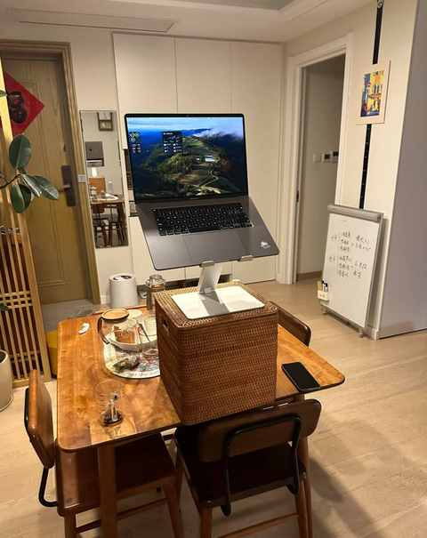
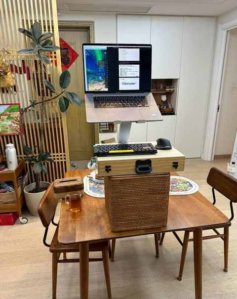
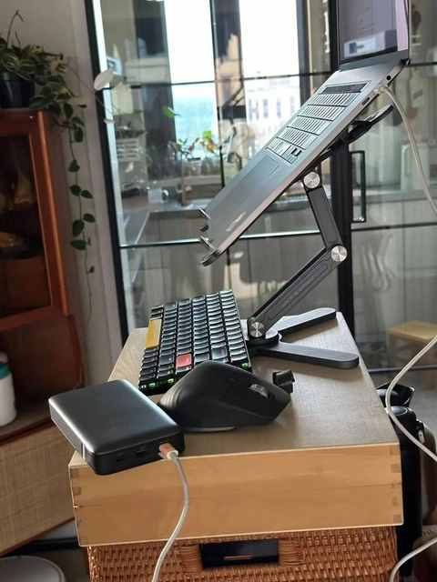
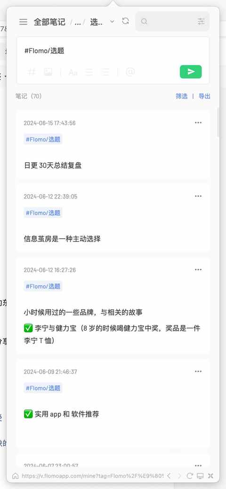
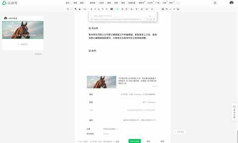

连续发文30天：普通人的日更收获与体验
今天是日更公众号的第 31 天，有必要总结复盘下连续发文 30 天的心路历程，毕竟是人生中首次连续发文 30 天。
至少已经能得出一个结论：如果我可以连续发文 30 天，那么人人都能连续发文 30 天！
一、缘起
在 5 月15 号刷到了纵横四海主播的一条关于输出倒逼输入的微博，其中提到的保证输出的方式很适合实操：每天写 800-1000 字的短内容，耗时在 30-90 分钟。

在方案很具体，逻辑极度清晰的情况下就开启具体的尝试啦，没想到今天已经是第 31 天。
二、时间安排及工作台
1️⃣ 时间安排
一般是晚上 8 点或者 9 点开始写，大多都能在 90 分钟里面写好并发布。
2️⃣ 工作台
本着如无不要，不增实体的原则，利用现有材料，组合了一个简易可站立办公的工作台，放在餐桌上。
大部分时候都是站立着完成文章的编辑，这样身体也能逐步感知到时间的流逝，能有效规避拖延的情况。
工作台 1.0：能用就行

工作台 2.0：必要的迭代升级
① 可放鼠标和机械键盘 ② 高度更适配身高 ③ 整体更稳固

最近是买了一个灵活度和散热都更好的支架（迈丛 N86）：

三、收获满满的 30 天
1️⃣ 保障 思考时间
写文章的时候就是边思考边写的过程，可能写的是一件事，思考的是另一件事，但完全没有关系，都是有效的思考，可能会在某一天串成一条线。
例如下面这些文章，就是写的过程中思考到的：
不上班的第 3 年，迷雾正在开散
当看完 170 本书之后，阅读成为习惯
男人，可能天生更适合做家务活
不断增长的年龄会带来什么
一名资深 i 人的自我修养
六月，对今后想做的事情有了一点新思考
2️⃣ 可写的东西有很多
每个人的视角或体验都是独一份的，也都有自己的独家记忆，往往能说出的东西都能写出来，不太能用语言表述的东西也能写出来。
下面的内容都是基于个人工作和生活的经验分享：
当中年男人不知道做什么的时候……
近期听了有收获有启发的 17 期播客单集
成功携号转网一年多了，聊聊办理体验与感受
在入坑 Mac的第 11 年，推荐这 9 款不可或缺的软件
恰逢618 ，推荐一些即实惠又好用的东西
3️⃣ 多表达才能表达得更好
和跑步一样，如果一开始就跑 10 km 肯定行不通，必须从 1km 开始慢慢来，先逐步到 3km、5km，然后再 8km，然后 10km。
如果想提高 5km 或 10km的成绩，必须先积累跑量再辅助正确的训练方法，放在表达上也是同理，多表达是前提和基础，具体的方法是重要辅助条件。
个人关注比较多的话题，看的比较多的内容，可能也是能写的：
跑步新手，一年600 km跑量的感受分享
读完《超越百岁》，让你更有把握活到一百岁！
连续三年高考落榜：2007-2009年，我的非典型高考故事
从关注列表的 451 名 up 主里，选出来 10 位宝藏 up 主推荐给大家！
2024 年 5 月份阅读总结 01
2024 年 5 月份阅读总结 02
4️⃣ 更坚定的要拾起表达欲
见过太多的精英叙事、大公司视角、行业观察而这些距离普通人的生活和工作都越来越远。
普通人想要重拾表达欲，需要契机、勇气与坚持。
要重拾表达欲不仅要养成表达的习惯，也要有适合的载体，如果把写文章理解成写作文的话，这种方式几乎适合每一个人。
终于把一些东西写出来啦：
尝试输出的第21天，一个普通中年决定要重拾表达欲
那些成长中的小幸运
聊聊我贯彻在日常中的重要原则：主动安全
4 年累计收听超 1700 个小时之后，想大声说：去听播客吧！
非典型不上班的中年男人的一天
17 年前的三次偶然事件
5️⃣ 知晓当下能力的边界
有些选题想写但目前的能力不能驾驭
有些选题能说出观点但无法自洽表达
有些选题 能在 60 分钟里一气呵成
有些选题需要进一步思考
……
四、极度简化的输出流程
只有三个步骤：
1️⃣ 确认选题
所有选题都归档到 flomo 中，完成之后就给到一个状态标识 ✅

2️⃣ 写出来
暂未用任何除公众号默认编辑器之外的编辑器，都是登录上之后，直接在默认编辑器里面撰写，文章格式也是快写好之前再做调整。

封面图现在都是从一个 ai 图库里面下载，有效规避版权问题。
https://www.lummi.ai
3️⃣ 快速发布
觉得一个字都写不出来了之后，就直接点击【发表】，不检查错别字，不发布预览核对格式，绝对不拖泥带水。
五、一切才刚刚开始
之前有分享过减重的经历：
关于体重从 91kg 到 75kg这件小事
当时提及的比较少，但现在感触更深的一个点是：
当我在减重的过程中，每天都做的是：控制饮食、加强运动、照镜子、称体重等等。是很难觉察到自己的体型和体态有变化。
但随着量变的累积，衣服会告诉你、更轻盈的脚步会给你反馈、邻居会和你说、辅导班的老师也会问你：怎么瘦那么多。
量变必然会带来质变，但每一个个体所需的量都不一样。
借用纵贯线乐队《亡命之徒 》的歌词作为本文的结尾：
“出发啦，别问那路在哪，迎风向前 是唯一的方法！”